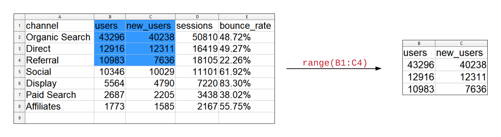
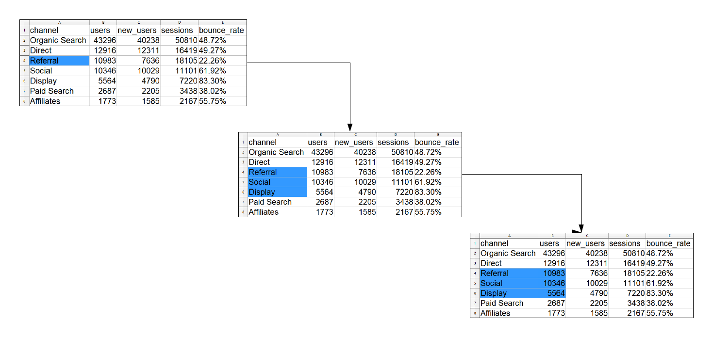
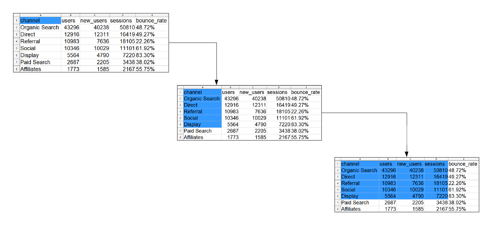
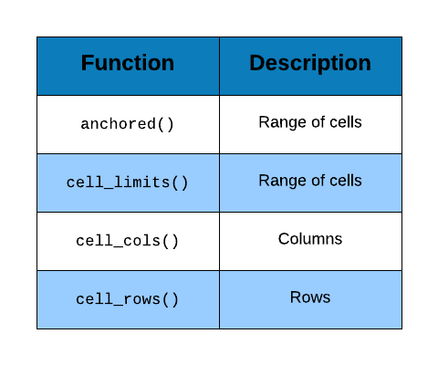
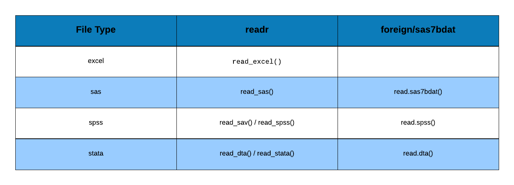

library(readxl)
library(haven)2 Import Data - Advanced
2.1 Introduction
In this chapter, we will:
- list sheets in an excel file
- read data from an excel sheet
- read specific cells from an excel sheet
- read specific rows
- read specific columns
- read data from - SAS - SPSS - STATA
We will use the following R packages:
2.2 List Sheets
An excel file may contain several sheets. Let us see how many sheets are present in sample.xls file and their respective names using excel_sheets().
excel_sheets('sample.xls')[1] "ecom"2.3 Read Sheet
Now that we know the number of sheets and their names, let us read data from the ecom sheet of the sample.xls file using read_excel(). We will specify the file name, and the sheet name or sheet number.
2.3.1 Case 1: Specify the sheet number
read_excel('sample.xls', sheet = 1)# A tibble: 7 × 5
channel users new_users sessions bounce_rate
<chr> <dbl> <dbl> <dbl> <chr>
1 Organic Search 43296 40238 50810 48.72%
2 Direct 12916 12311 16419 49.27%
3 Referral 10983 7636 18105 22.26%
4 Social 10346 10029 11101 61.92%
5 Display 5564 4790 7220 83.30%
6 Paid Search 2687 2205 3438 38.02%
7 Affiliates 1773 1585 2167 55.75% 2.3.2 Case 2: Specify the sheet name
read_excel('sample.xls', sheet = 'ecom')# A tibble: 7 × 5
channel users new_users sessions bounce_rate
<chr> <dbl> <dbl> <dbl> <chr>
1 Organic Search 43296 40238 50810 48.72%
2 Direct 12916 12311 16419 49.27%
3 Referral 10983 7636 18105 22.26%
4 Social 10346 10029 11101 61.92%
5 Display 5564 4790 7220 83.30%
6 Paid Search 2687 2205 3438 38.02%
7 Affiliates 1773 1585 2167 55.75% Notice when you use the sheet name, the name should be enclosed in single/double quotes.
2.4 Read Specific Cells
You may not always want to read all the columns or rows from the excel sheet. In such cases, you can specify the cells from which the data must be read which can be achieved using the range argument. So how do we specify the cells from which to read data? There are different ways of specifying the cell range and we will look at them one by one:
2.4.1 Method 1

The first method uses the cell names along with : to specify the cell range. For example, to read data from first 4 rows of columns B and C, we will specify the range as "B1:C4".
read_excel('sample.xls', sheet = 1, range = "B1:C4")# A tibble: 3 × 2
users new_users
<dbl> <dbl>
1 43296 40238
2 12916 12311
3 10983 7636To read data from first 5 rows of columns A, B and C, we will specify the range as "A1:C5".
read_excel('sample.xls', sheet = 1, range = "A1:C5")# A tibble: 4 × 3
channel users new_users
<chr> <dbl> <dbl>
1 Organic Search 43296 40238
2 Direct 12916 12311
3 Referral 10983 7636
4 Social 10346 100292.4.2 Method 2

In the second method, we start from a particular cell and specify the number of rows and columns to be covered keeping the initial cell as anchorage. In the below example, we want to read 3 rows and 2 columns starting from the cell A4.
read_excel('sample.xls', sheet = 1, col_names = FALSE,
range = anchored("A4", dim = c(3, 2)))# A tibble: 3 × 2
...1 ...2
<chr> <dbl>
1 Referral 10983
2 Social 10346
3 Display 55642.4.3 Method 3
In this method, we use the cell_limit() and specify the location of two ends of a rectangle covering the cells we want to read. For example, to read data from the first 6 rows and 4 columns, we will specify the range as following:
- start from the first row of the first column
- cover all cells upto the 6th row of the 4th column

read_excel('sample.xls', sheet = 1,
range = cell_limits(c(1, 1), c(6, 4)))# A tibble: 5 × 4
channel users new_users sessions
<chr> <dbl> <dbl> <dbl>
1 Organic Search 43296 40238 50810
2 Direct 12916 12311 16419
3 Referral 10983 7636 18105
4 Social 10346 10029 11101
5 Display 5564 4790 7220You can use NA to indicate the first and last row/column. For example, to read data from all the rows from the second column onwards:
read_excel('sample.xls', sheet = 1,
range = cell_limits(c(1, 2), c(NA, NA)))# A tibble: 7 × 4
users new_users sessions bounce_rate
<dbl> <dbl> <dbl> <chr>
1 43296 40238 50810 48.72%
2 12916 12311 16419 49.27%
3 10983 7636 18105 22.26%
4 10346 10029 11101 61.92%
5 5564 4790 7220 83.30%
6 2687 2205 3438 38.02%
7 1773 1585 2167 55.75% Let us quickly look at how we will specify range of cells using the above 3 methods when we want to read data from the first 4 rows of columns B and C:
2.4.4 Method 1
read_excel('sample.xls', sheet = 1,
range = "B1:C4")# A tibble: 3 × 2
users new_users
<dbl> <dbl>
1 43296 40238
2 12916 12311
3 10983 76362.4.5 Method 2
read_excel('sample.xls', sheet = 1,
range = anchored("B1", dim = c(4, 2)))# A tibble: 3 × 2
users new_users
<dbl> <dbl>
1 43296 40238
2 12916 12311
3 10983 76362.4.6 Method 3
read_excel('sample.xls', sheet = 1,
range = cell_limits(c(1, 2), c(4, 3)))# A tibble: 3 × 2
users new_users
<dbl> <dbl>
1 43296 40238
2 12916 12311
3 10983 76362.5 Read Specific Rows
When you want to read a subset of rows from the data, use cell_rows() and specify the row numbers or the range. In the below example, we want to read the first 4 rows of data from the file.
read_excel('sample.xls', sheet = 1, range = cell_rows(1:4))# A tibble: 3 × 5
channel users new_users sessions bounce_rate
<chr> <dbl> <dbl> <dbl> <chr>
1 Organic Search 43296 40238 50810 48.72%
2 Direct 12916 12311 16419 49.27%
3 Referral 10983 7636 18105 22.26% 2.6 Read Single Column
If you want to read a single column from the data, use cell_cols() and specify the column number. In the below example, we read the second column from the sample.xls file.
read_excel('sample.xls', sheet = 1, range = cell_cols(2))# A tibble: 7 × 1
users
<dbl>
1 43296
2 12916
3 10983
4 10346
5 5564
6 2687
7 17732.7 Read Multiple Columns
In case of multiple columns, we need to specify the column numbers or the column range. In the below example, we want to read the 2nd, 4th and 6th column from the sample.xls file.
read_excel('sample.xls', sheet = 1, range = cell_cols(c(2, 4, 6)))# A tibble: 7 × 5
users new_users sessions bounce_rate ...5
<dbl> <dbl> <dbl> <chr> <lgl>
1 43296 40238 50810 48.72% NA
2 12916 12311 16419 49.27% NA
3 10983 7636 18105 22.26% NA
4 10346 10029 11101 61.92% NA
5 5564 4790 7220 83.30% NA
6 2687 2205 3438 38.02% NA
7 1773 1585 2167 55.75% NA In the next example, we want to read data from the 2nd column upto and including the 6th column.
read_excel('sample.xls', sheet = 1, range = cell_cols(c(2:6)))# A tibble: 7 × 5
users new_users sessions bounce_rate ...5
<dbl> <dbl> <dbl> <chr> <lgl>
1 43296 40238 50810 48.72% NA
2 12916 12311 16419 49.27% NA
3 10983 7636 18105 22.26% NA
4 10346 10029 11101 61.92% NA
5 5564 4790 7220 83.30% NA
6 2687 2205 3438 38.02% NA
7 1773 1585 2167 55.75% NA 2.7.1 Summary

2.8 Statistical Softwares
We will use the haven package to read data from files of other statistical softwares such as:
- SAS
- SPSS
- STATA
2.8.1 STATA
read_stata('airline.dta') # A tibble: 32 × 6
year y w r l k
<dbl> <dbl> <dbl> <dbl> <dbl> <dbl>
1 1948 1.21 0.243 0.145 1.41 0.612
2 1949 1.35 0.260 0.218 1.38 0.559
3 1950 1.57 0.278 0.316 1.39 0.573
4 1951 1.95 0.297 0.394 1.55 0.564
5 1952 2.27 0.310 0.356 1.80 0.574
6 1953 2.73 0.322 0.359 1.93 0.711
7 1954 3.03 0.335 0.403 1.96 0.776
8 1955 3.56 0.350 0.396 2.12 0.827
9 1956 3.98 0.361 0.382 2.43 0.800
10 1957 4.42 0.379 0.305 2.71 0.921
# ℹ 22 more rows2.8.2 SPSS
read_spss('employee.sav') # A tibble: 474 × 9
id gender educ jobcat salary salbegin jobtime prevexp minority
<dbl> <chr+lbl> <dbl+lbl> <dbl+l> <dbl+> <dbl+lb> <dbl+l> <dbl+lbl> <dbl+lb>
1 1 m [Male] 15 [15] 3 [Man… 57000 27000 98 144 0 [No]
2 2 m [Male] 16 [16] 1 [Cle… 40200 18750 98 36 0 [No]
3 3 f [Female] 12 [12] 1 [Cle… 21450 12000 98 381 0 [No]
4 4 f [Female] 8 [8] 1 [Cle… 21900 13200 98 190 0 [No]
5 5 m [Male] 15 [15] 1 [Cle… 45000 21000 98 138 0 [No]
6 6 m [Male] 15 [15] 1 [Cle… 32100 13500 98 67 0 [No]
7 7 m [Male] 15 [15] 1 [Cle… 36000 18750 98 114 0 [No]
8 8 f [Female] 12 [12] 1 [Cle… 21900 9750 98 0 [mis… 0 [No]
9 9 f [Female] 15 [15] 1 [Cle… 27900 12750 98 115 0 [No]
10 10 f [Female] 12 [12] 1 [Cle… 24000 13500 98 244 0 [No]
# ℹ 464 more rows2.8.3 SAS
read_sas('airline.sas7bdat')# A tibble: 32 × 6
YEAR Y W R L K
<dbl> <dbl> <dbl> <dbl> <dbl> <dbl>
1 1948 1.21 0.243 0.145 1.41 0.612
2 1949 1.35 0.260 0.218 1.38 0.559
3 1950 1.57 0.278 0.316 1.39 0.573
4 1951 1.95 0.297 0.394 1.55 0.564
5 1952 2.27 0.310 0.356 1.80 0.574
6 1953 2.73 0.322 0.359 1.93 0.711
7 1954 3.03 0.335 0.403 1.96 0.776
8 1955 3.56 0.350 0.396 2.12 0.827
9 1956 3.98 0.361 0.382 2.43 0.800
10 1957 4.42 0.379 0.305 2.71 0.921
# ℹ 22 more rows2.9 Summary
